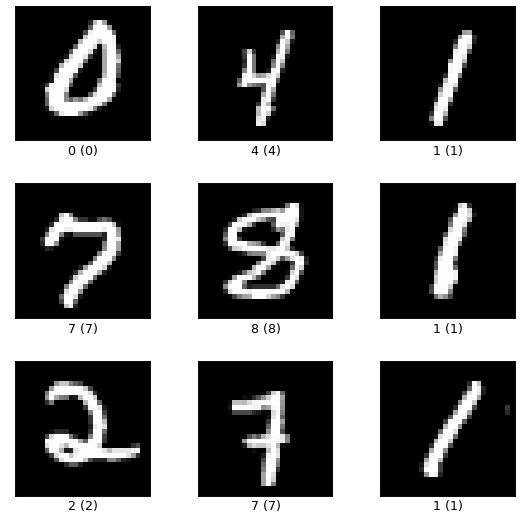
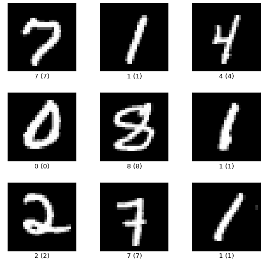
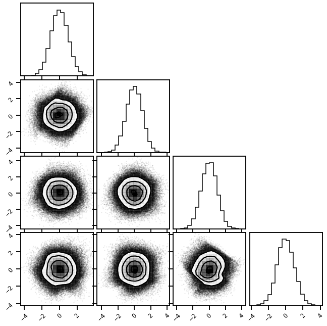

# @title Install Packages
try:
import sys, os
from pyprojroot import here
# spyder up to find the root
root = here(project_files=[".here", "setup.py"])
# append to path
sys.path.append(str(root))
except ModuleNotFoundError:
import os
os.system("pip install objax chex tfds-nightly tf-nightly tensor-sensor[jax] einops")
os.system("pip install git+https://github.com/IPL-UV/rbig_jax.git#egg=rbig_jax")
Package Preamble¶
# jax packages
import jax
import jax.numpy as jnp
from jax.config import config
import chex
config.update("jax_enable_x64", False)
# datasets
import tensorflow_datasets as tfds
import numpy as np
from functools import partial
from sklearn.preprocessing import StandardScaler
# library parameters
from rbig_jax.data import get_classic
from rbig_jax.plots import plot_info_loss, plot_joint, plot_joint_prob
# logging
import tqdm
import wandb
# plot methods
import matplotlib.pyplot as plt
import seaborn as sns
sns.reset_defaults()
sns.set_context(context="talk", font_scale=0.7)
%load_ext lab_black
%matplotlib inline
%load_ext autoreload
%autoreload 2
INFO:tensorflow:Enabling eager execution
INFO:tensorflow:Enabling v2 tensorshape
INFO:tensorflow:Enabling resource variables
INFO:tensorflow:Enabling tensor equality
INFO:tensorflow:Enabling control flow v2
Data¶
We’re going to using the MNIST dataset. It’s a simple dataset with a single channel image and 28x28. So overall it’s 60Kx28x28x1.
We’re going to use the numpy standard for the images.
B,H,W,C
where:
B- batch sizeH- heightW- widthC- channels
ds
<_OptionsDataset shapes: {image: (28, 28, 1), label: ()}, types: {image: tf.uint8, label: tf.int64}>
%%time
import tensorflow as tf
# DATA, CIFAR10
ds, ds_info = tfds.load('mnist', split='train', as_supervised=True, shuffle_files=True, with_info=True)
CPU times: user 41.6 ms, sys: 133 µs, total: 41.7 ms
Wall time: 41.1 ms
fig = tfds.show_examples(ds, ds_info)

# normalize images
def normalize_img(image, label):
"""Normalizes images: `uint8` -> `float32`."""
return tf.cast(image, tf.float32) / 255.0, label
ds = ds.map(normalize_img, num_parallel_calls=tf.data.experimental.AUTOTUNE)
fig = tfds.show_examples(ds, ds_info)

# take some examples
B = 10
# take 10 samples from the dataset
ds_sample = ds.take(B)
# extract all images
X = [x[0] for x in tfds.as_numpy(ds_sample)]
# stack them in a new batch axes
X = np.stack(X).astype(np.float32)
# add some noise
X *= np.random.rand(*X.shape)
X.shape
(10, 28, 28, 1)
Reshaping¶
# define filter shape
filter_shape = (2, 2)
fh, fw = filter_shape
# new shapes
Hn = H // fh
Wn = W // fw
# extract shape
B, H, W, C = X.shape
# refactor in a nicer way
from einops import rearrange
Forward Reshape¶
Factor spatial dimension
\[
\text{B} \times \text{H} \times \text{W} \times \text{C} \rightarrow
\text{B} \times \text{C} \times \frac{\text{H}}{\text{fh}} \times fh \times \frac{\text{W}}{\text{fw}} \times fw
\]
Transpose
\[
\text{B} \times \text{C} \times \frac{\text{H}}{\text{fh}} \times fh \times \frac{\text{W}}{\text{fw}} \times fw
\rightarrow
\text{B} \times \text{C} \times \frac{\text{H}}{\text{fh}} \times \frac{\text{W}}{\text{fw}} \times fh \times fw
\]
Aggregate Spatial Dim factors into channels
\[
\text{B} \times \text{C} \times \frac{\text{H}}{\text{fh}} \times fh \times \frac{\text{W}}{\text{fw}} \times fw
\rightarrow
\left( \text{B} \times \text{C} \times \frac{\text{H}}{\text{fh}} \times \frac{\text{W}}{\text{fw}} \right) \times \left( fh \times fw \right)
\]
X_ms = rearrange(X, "B (Hn fh) (Wn fw) C -> (B C Hn Wn) (fh fw)", fh=fh, fw=fw)
X_ms.shape
(1960, 4)
Inverse Reshape¶
Aggregate Spatial Dim factors into channels
\[
\left( \text{B} \times \text{C} \times \frac{\text{H}}{\text{fh}} \times \frac{\text{W}}{\text{fw}} \right) \times \left( \text{fh} \times \text{fw} \right)
\rightarrow
\text{B} \times \text{C} \times \frac{\text{H}}{\text{fh}} \times \text{fh} \times \frac{\text{W}}{\text{fw}} \times \text{fw}
\]
Transpose
\[
\text{B} \times \text{C} \times \frac{\text{H}}{\text{fh}} \times \frac{\text{W}}{\text{fw}} \times \text{fh} \times \text{fw}
\rightarrow
\text{B} \times \text{C} \times \frac{\text{H}}{\text{fh}} \times \text{fh} \times \frac{\text{W}}{\text{fw}} \times \text{fw}
\]
Factor spatial dimension
\[
\text{B} \times \text{C} \times \frac{\text{H}}{\text{fh}} \times \text{fh} \times \frac{\text{W}}{\text{fw}} \times \text{fw}
\rightarrow
\text{B} \times \text{H} \times \text{W} \times \text{C}
\]
X_approx = rearrange(
X_ms,
"(B C Hn Wn) (fh fw) -> B (Hn fh) (Wn fw) C",
B=B,
C=C,
Hn=Hn,
Wn=Wn,
fh=fh,
fw=fw,
)
# assert they're the same
np.testing.assert_array_equal(X_approx, X)
Reshape Layer¶
from typing import Tuple, Optional
from jax.random import PRNGKey
from chex import Array, dataclass
def ReshapeMultiscale(filter_shape=Tuple[int, int]):
def init_func(rng: PRNGKey, shape, **kwargs):
_, H, W, C = shape
# extract coordinates
fh, fw = filter_shape
# check for no remainders
assert H % fh == 0
assert W % fw == 0
# new shapes
Hn = H // fh
Wn = W // fw
def forward_and_log_det(params: dataclass, inputs: Array, **kwargs):
# batch size is independent
B, *_ = inputs.shape
# forward rearrange
outputs = rearrange(
inputs,
"B (Hn fh) (Wn fw) C -> (B C Hn Wn) (fh fw)",
B=B,
C=C,
Hn=Hn,
Wn=Wn,
fh=fh,
fw=fw,
)
# logdet empty
log_det = jnp.zeros_like(outputs)
return outputs, log_det
def inverse_and_log_det(params: dataclass, inputs: Array, **kwargs):
outputs = rearrange(
inputs,
"(B C Hn Wn) (fh fw) -> B (Hn fh) (Wn fw) C",
B=B,
C=C,
Hn=Hn,
Wn=Wn,
fh=fh,
fw=fw,
)
# logdet empty
log_det = jnp.zeros_like(outputs)
return outputs, log_det
return (), forward_and_log_det, inverse_and_log_det
return init_func
Demo¶
# layer params
filter_shape = (2, 2)
key = jax.random.PRNGKey(123)
# initialize layer
reshape_layer = ReshapeMultiscale(filter_shape)
# initialize params and functions
_, f, inv_f = reshape_layer(key, X.shape)
Forward¶
X_ms_l1, _ = f((), X)
X_ms_l1.shape
(1960, 4)
Inverse¶
X_approx, _ = inv_f((), X_ms_l1)
X_approx.shape
(10, 28, 28, 1)
RBIG Transformation¶
from rbig_jax.transforms.rotation import InitPCARotation
from rbig_jax.transforms.histogram import InitUniHistUniformize
from rbig_jax.transforms.block import InitRBIGBlock
# take some examples
B = 1_000
# take 10 samples from the dataset
ds_sample = ds.take(B)
# extract all images
X = [x[0] for x in tfds.as_numpy(ds_sample)]
# stack them in a new batch axes
X = np.stack(X)
# normalize
from sklearn.preprocessing import StandardScaler
X = X.reshape(-1, 1)
X = StandardScaler().fit_transform(X)
X = X.reshape((B, 28, 28, 1))
# add some noise
X *= np.random.rand(*X.shape)
X.shape
(1000, 28, 28, 1)
Transformation¶
# layer params
filter_shape = (2, 2)
key = jax.random.PRNGKey(123)
# initialize layer
reshape_layer = ReshapeMultiscale(filter_shape)
# initialize params and functions
_, f, inv_f = reshape_layer(key, X.shape)
X_ms_l1, _ = f((), X)
X_ms_l1.shape
(196000, 4)
Model¶
support_extension = 10
alpha = 1e-5
precision = 100
nbins = int(np.sqrt(X.shape[0]))
# initialize histogram transformation
uni_uniformize = InitUniHistUniformize(
n_samples=X_ms_l1.shape[0],
nbins=nbins,
support_extension=support_extension,
precision=precision,
alpha=alpha,
)
# initialize rotation transformation
rot_transform = InitPCARotation()
# initialize marginal gaussianization
eps = 1e-5
fit_transform_func, forward_f, grad_f, inverse_f = InitRBIGBlock(
uni_uniformize, rot_transform, eps
)
# optional, compiles the function to make it faster
fit_transform_func_jitted = jax.jit(fit_transform_func)
forward_f_jitted = jax.jit(forward_f)
grad_f_jitted = jax.jit(grad_f)
inverse_f_jitted = jax.jit(inverse_f)
%%time
n_layers = 20
params = []
losses = []
ilayer = 0
X_g = X_ms_l1
while ilayer < n_layers:
# compute
X_g, layer_params = fit_transform_func_jitted(X_g)
# increment
ilayer += 1
params.append(layer_params)
CPU times: user 5.71 ms, sys: 3.5 ms, total: 9.2 ms
Wall time: 3.8 ms
import corner
X_g.shape
(196000, 4)
fig = corner.corner(X_g)

Another Level¶
# layer params
filter_shape = (2, 2)
key = jax.random.PRNGKey(123)
# initialize layer
reshape_layer = ReshapeMultiscale(filter_shape)
# initialize params and functions
_, f, inv_f = reshape_layer(key, .shape)
X_ms_l1, _ = f((), X_ms_l1)
X_ms_l1.shape